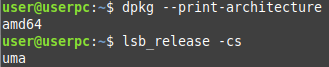

Install Docker Engine in GNU/Linux
Table of contents
Introduction
In this post, we are going to go trough the process to install Docker Engine in our system. That will allows us to run containers and later on use it with Docker Compose or Kubernetes. There are other tools designed to run containers, but Docker is the most popular. To have this software installed in our workstation, will give us the benefit to run our own infrastructure with certain isolation.
In my opinion, it is very good choice if you are developer or system administrator. You can prepare all you need without need of Virtual Machines or other software such us Virtual Box or VMware Workstation. It will also help to keep the performance of your computer efficiently.
At the end, we will also share some key concepts of this technology. This key concepts will be basic to understand technologies that can use Docker underneath, as we mentioned already: Docker Compose, Kubernetes or Docker Swarm.
Installation
I support the idea that if you want to install any kind of software, you should always check the official documentation. You can apply this approach for any piece of software or package. Always check official documentation as source of truth.
Why? Because you may find thousands of blogs or articles of how to install Docker or X software, but, will they be updated if we compare it to official documentation? I don't think so.
Even in this entry of this blog, I will share some commands and after some months and with new releases of Docker, I won't be sure if exactly same commands applies.
So as I said, we should check Install Docker Engine documentation and follow it at our convenience. In my case, I want to install it for my GNU/Linux distribution based in Linux Mint. Then, this is the page I am looking for: Install Docker Engine on Ubuntu (yes, there's no Linux Mint, so we select Ubuntu). I will go with the option Install using the repository.
Set up the repository
We start by installing some dependencies.
$ sudo apt-get install ca-certificates curl gnupg lsb-release
Adding the GPG key.
$ curl -fsSL https://download.docker.com/linux/ubuntu/gpg | sudo gpg --dearmor -o /etc/apt/keyrings/docker.gpg
And finally, adding the repository: (WAIT before shooting the command)
Warning: Let’s first understand the command. We are printing the architecture and later on the name of the release. Let’s see what we get:
And now, let’s remind what official documentation says:
To install Docker Engine, you need the 64-bit version of one of these Ubuntu versions:
Ubuntu Jammy 22.04 (LTS)
Ubuntu Impish 21.10
Ubuntu Focal 20.04 (LTS)
Ubuntu Bionic 18.04 (LTS)Docker Engine is supported on
https://docs.docker.com/engine/install/ubuntu/#os-requirementsx86_64(oramd64),armhf,arm64, ands390xarchitectures.
We can see that our architecture is supported (amd64) but not our release (uma). As a matter of fact, if we browser this address: https://download.docker.com/linux/ubuntu/dists/ you will not find uma anywhere. If your release appears, feel free to shoot the original command.
Then, you will need to think what version you want to install. If you want to go for the latest, you may use jammy (from Ubuntu Jammy 22.04 (LTS) . So the command will be like this:
Install Docker Engine
Once we added successfully the repository, we can finally install Docker.
$ sudo apt-get install docker-ce docker-ce-cli containerd.io docker-compose-plugin
And now, we are ready to test if installation went fine:
And let’s run a quick Hello World container.
If you want to run Docker as non-sudo user, check this out: Manage Docker as a non-root user
Key Concepts
Now that you have Docker Engine, what are next steps?
I encourage you to take some training to understand the potential of this technology. I recommend this Udemy course: Docker Mastery: with Kubernetes +Swarm from a Docker Captain. It will be very useful to learn about Docker and get a solid base.
You need to be aware that you are running containers and they are stateless by default. It means that if you do any change inside the container, once it is terminated, all the changes will be gone.
However, you can use volumes in order to persist data: Use volumes
Finally, once you get this solid knowledge about how Docker works, I recommend to use Docker-Compose, as it will boost your confidence managing containers and you will get better results. Also, you will be able to create more complicated solutions easily.
Cheers!